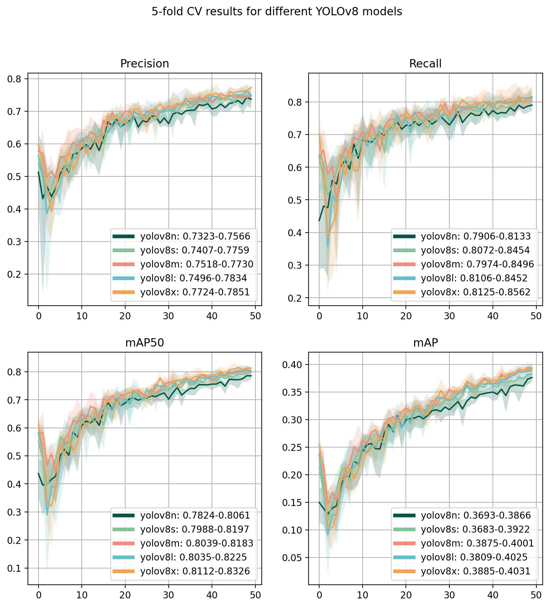

import matplotlib.pyplot as pltimport seaborn as snsimport pandas as pdfrom pathlib import Pathimport osimport numpy as npfrom matplotlib.lines import Line2Dfrom matplotlib.colors import ListedColormapcolors = ["#005845", "#84C497", "#F28E77", "#64C1CB", "#F3A44C"]syke5 = ListedColormap(colors)models = ['yolov8n', 'yolov8s', 'yolov8m', 'yolov8l', 'yolov8x']model_path = Path('../runs')
Cross-validation
Evaluate the cross-validation performance of different YOLOv8 models.
Metrics used here are the following:
\(Precision = \frac{tp}{tp+fp}\), with IoU-threshold of 0.5
\(Recall = \frac{tp}{tp+fn}\), with IoU-threshold of 0.5
\(mAP50\) is the area under the precision-recall curve with IoU threshold of 0.5
\(mAP\) or \(AP@[.5:.95]\) is the average \(mAP\) for IoU from 0.5 to 0.95 with a step size of 0.05
\(IoU\) corresponds to Intersection-over-Union, the ratio between the overlap and union of two bounding boxes

Dark line is the average of the metric during the corresponding epoch, and shaded areas show the best and worst values.
Test set results
Example results are acquired with the yolov8x model with best validation score. The predictions are also cleaned using the following steps:
All prediction whose centroid points are not located on water are discarded. The water mask used contains layers jarvi (Lakes), meri (Sea) and virtavesialue (Rivers as polygon geometry) from the Topographical database by the National Land Survey of Finland
All predictions whose centroid points are located on water rock areas are discarded. The mask is the layer vesikivikko (Water rock areas) from the Topographical database.
All predictions that contain an above water rock within the bounding box are discarded. The mask is the class 38513 (Rock above water) from the layer vesikivi in the Topographical database.
All predictions that contain a lighthouse or a sector light within the bounding box are discarded. Lighthouses and sector lights come from Väylävirasto data, ty_njr class ids are 1, 2, 3, 4, 5.
All predictions that are obviously too large are discarded. The prediction is defined to be “too large” if either of its edges is longer than 750 meters.
Code
from drone_detector.metrics import GisCOCOevalfrom drone_detector.processing.coco import*
Evaluating for full data...
Running per image evaluation...
Evaluate annotation type *bbox*
DONE (t=0.13s).
Accumulating evaluation results...
DONE (t=0.00s).
Average Precision (AP) @[ IoU=0.50:0.95 | area= all | maxDets=10000 ] = 0.303
Average Precision (AP) @[ IoU=0.50 | area= all | maxDets=10000 ] = 0.690
Average Precision (AP) @[ IoU=0.75 | area= all | maxDets=10000 ] = 0.188
Average Precision (AP) @[ IoU=0.50:0.95 | area= small | maxDets=10000 ] = 0.303
Average Precision (AP) @[ IoU=0.50:0.95 | area=medium | maxDets=10000 ] = -1.000
Average Precision (AP) @[ IoU=0.50:0.95 | area= large | maxDets=10000 ] = -1.000
Average Recall (AR) @[ IoU=0.50:0.95 | area= all | maxDets=1000 ] = 0.425
Average Recall (AR) @[ IoU=0.50:0.95 | area= small | maxDets=1000 ] = 0.425
Average Recall (AR) @[ IoU=0.50:0.95 | area=medium | maxDets=1000 ] = -1.000
Average Recall (AR) @[ IoU=0.50:0.95 | area= large | maxDets=1000 ] = -1.000
Each 100x100km image separately.
Code
image_ids = ['34VEN_20210714', '34VEN_20220624', '34VEN_20220813','34VER_20220617', '34VER_20220712', '34VER_20220826']for i inrange(6): n_gts =len([coco_eval.coco_eval.cocoGt.anns[a+1] for a inrange(len(coco_eval.coco_eval.cocoGt.anns)) if coco_eval.coco_eval.cocoGt.anns[a+1]['image_id'] == i]) n_dts =len([coco_eval.coco_eval.cocoDt.anns[a+1] for a inrange(len(coco_eval.coco_eval.cocoDt.anns)) if coco_eval.coco_eval.cocoDt.anns[a+1]['image_id'] == i])print(f'{image_ids[i]}: {n_gts} annotations, {n_dts} detections') coco_eval.coco_eval.params.imgIds = [i] coco_eval.evaluate(classes_separately=False)print('\n')
34VEN_20210714: 398 annotations, 543 detections
Evaluating for full data...
Running per image evaluation...
Evaluate annotation type *bbox*
DONE (t=1.12s).
Accumulating evaluation results...
DONE (t=0.00s).
Average Precision (AP) @[ IoU=0.50:0.95 | area= all | maxDets=10000 ] = 0.311
Average Precision (AP) @[ IoU=0.50 | area= all | maxDets=10000 ] = 0.704
Average Precision (AP) @[ IoU=0.75 | area= all | maxDets=10000 ] = 0.193
Average Precision (AP) @[ IoU=0.50:0.95 | area= small | maxDets=10000 ] = 0.311
Average Precision (AP) @[ IoU=0.50:0.95 | area=medium | maxDets=10000 ] = -1.000
Average Precision (AP) @[ IoU=0.50:0.95 | area= large | maxDets=10000 ] = -1.000
Average Recall (AR) @[ IoU=0.50:0.95 | area= all | maxDets=1000 ] = 0.462
Average Recall (AR) @[ IoU=0.50:0.95 | area= small | maxDets=1000 ] = 0.462
Average Recall (AR) @[ IoU=0.50:0.95 | area=medium | maxDets=1000 ] = -1.000
Average Recall (AR) @[ IoU=0.50:0.95 | area= large | maxDets=1000 ] = -1.000
34VEN_20220624: 454 annotations, 506 detections
Evaluating for full data...
Running per image evaluation...
Evaluate annotation type *bbox*
DONE (t=1.26s).
Accumulating evaluation results...
DONE (t=0.00s).
Average Precision (AP) @[ IoU=0.50:0.95 | area= all | maxDets=10000 ] = 0.308
Average Precision (AP) @[ IoU=0.50 | area= all | maxDets=10000 ] = 0.730
Average Precision (AP) @[ IoU=0.75 | area= all | maxDets=10000 ] = 0.198
Average Precision (AP) @[ IoU=0.50:0.95 | area= small | maxDets=10000 ] = 0.308
Average Precision (AP) @[ IoU=0.50:0.95 | area=medium | maxDets=10000 ] = -1.000
Average Precision (AP) @[ IoU=0.50:0.95 | area= large | maxDets=10000 ] = -1.000
Average Recall (AR) @[ IoU=0.50:0.95 | area= all | maxDets=1000 ] = 0.428
Average Recall (AR) @[ IoU=0.50:0.95 | area= small | maxDets=1000 ] = 0.428
Average Recall (AR) @[ IoU=0.50:0.95 | area=medium | maxDets=1000 ] = -1.000
Average Recall (AR) @[ IoU=0.50:0.95 | area= large | maxDets=1000 ] = -1.000
34VEN_20220813: 442 annotations, 560 detections
Evaluating for full data...
Running per image evaluation...
Evaluate annotation type *bbox*
DONE (t=1.34s).
Accumulating evaluation results...
DONE (t=0.00s).
Average Precision (AP) @[ IoU=0.50:0.95 | area= all | maxDets=10000 ] = 0.383
Average Precision (AP) @[ IoU=0.50 | area= all | maxDets=10000 ] = 0.815
Average Precision (AP) @[ IoU=0.75 | area= all | maxDets=10000 ] = 0.249
Average Precision (AP) @[ IoU=0.50:0.95 | area= small | maxDets=10000 ] = 0.383
Average Precision (AP) @[ IoU=0.50:0.95 | area=medium | maxDets=10000 ] = -1.000
Average Precision (AP) @[ IoU=0.50:0.95 | area= large | maxDets=10000 ] = -1.000
Average Recall (AR) @[ IoU=0.50:0.95 | area= all | maxDets=1000 ] = 0.506
Average Recall (AR) @[ IoU=0.50:0.95 | area= small | maxDets=1000 ] = 0.506
Average Recall (AR) @[ IoU=0.50:0.95 | area=medium | maxDets=1000 ] = -1.000
Average Recall (AR) @[ IoU=0.50:0.95 | area= large | maxDets=1000 ] = -1.000
34VER_20220617: 48 annotations, 63 detections
Evaluating for full data...
Running per image evaluation...
Evaluate annotation type *bbox*
DONE (t=0.02s).
Accumulating evaluation results...
DONE (t=0.00s).
Average Precision (AP) @[ IoU=0.50:0.95 | area= all | maxDets=10000 ] = 0.218
Average Precision (AP) @[ IoU=0.50 | area= all | maxDets=10000 ] = 0.498
Average Precision (AP) @[ IoU=0.75 | area= all | maxDets=10000 ] = 0.142
Average Precision (AP) @[ IoU=0.50:0.95 | area= small | maxDets=10000 ] = 0.218
Average Precision (AP) @[ IoU=0.50:0.95 | area=medium | maxDets=10000 ] = -1.000
Average Precision (AP) @[ IoU=0.50:0.95 | area= large | maxDets=10000 ] = -1.000
Average Recall (AR) @[ IoU=0.50:0.95 | area= all | maxDets=1000 ] = 0.346
Average Recall (AR) @[ IoU=0.50:0.95 | area= small | maxDets=1000 ] = 0.346
Average Recall (AR) @[ IoU=0.50:0.95 | area=medium | maxDets=1000 ] = -1.000
Average Recall (AR) @[ IoU=0.50:0.95 | area= large | maxDets=1000 ] = -1.000
34VER_20220712: 110 annotations, 148 detections
Evaluating for full data...
Running per image evaluation...
Evaluate annotation type *bbox*
DONE (t=0.09s).
Accumulating evaluation results...
DONE (t=0.00s).
Average Precision (AP) @[ IoU=0.50:0.95 | area= all | maxDets=10000 ] = 0.332
Average Precision (AP) @[ IoU=0.50 | area= all | maxDets=10000 ] = 0.737
Average Precision (AP) @[ IoU=0.75 | area= all | maxDets=10000 ] = 0.217
Average Precision (AP) @[ IoU=0.50:0.95 | area= small | maxDets=10000 ] = 0.332
Average Precision (AP) @[ IoU=0.50:0.95 | area=medium | maxDets=10000 ] = -1.000
Average Precision (AP) @[ IoU=0.50:0.95 | area= large | maxDets=10000 ] = -1.000
Average Recall (AR) @[ IoU=0.50:0.95 | area= all | maxDets=1000 ] = 0.446
Average Recall (AR) @[ IoU=0.50:0.95 | area= small | maxDets=1000 ] = 0.446
Average Recall (AR) @[ IoU=0.50:0.95 | area=medium | maxDets=1000 ] = -1.000
Average Recall (AR) @[ IoU=0.50:0.95 | area= large | maxDets=1000 ] = -1.000
34VER_20220826: 57 annotations, 85 detections
Evaluating for full data...
Running per image evaluation...
Evaluate annotation type *bbox*
DONE (t=0.03s).
Accumulating evaluation results...
DONE (t=0.00s).
Average Precision (AP) @[ IoU=0.50:0.95 | area= all | maxDets=10000 ] = 0.344
Average Precision (AP) @[ IoU=0.50 | area= all | maxDets=10000 ] = 0.793
Average Precision (AP) @[ IoU=0.75 | area= all | maxDets=10000 ] = 0.225
Average Precision (AP) @[ IoU=0.50:0.95 | area= small | maxDets=10000 ] = 0.344
Average Precision (AP) @[ IoU=0.50:0.95 | area=medium | maxDets=10000 ] = -1.000
Average Precision (AP) @[ IoU=0.50:0.95 | area= large | maxDets=10000 ] = -1.000
Average Recall (AR) @[ IoU=0.50:0.95 | area= all | maxDets=1000 ] = 0.451
Average Recall (AR) @[ IoU=0.50:0.95 | area= small | maxDets=1000 ] = 0.451
Average Recall (AR) @[ IoU=0.50:0.95 | area=medium | maxDets=1000 ] = -1.000
Average Recall (AR) @[ IoU=0.50:0.95 | area= large | maxDets=1000 ] = -1.000
With the exception of 34VER_20220617, all mAP50 scores are over 0.7. However, the worst performing tile has only 49 annotations, compared to each image from 34VEN having around 400. Model has found more potential ships from all of the tiles, even after cleaning the predictions.